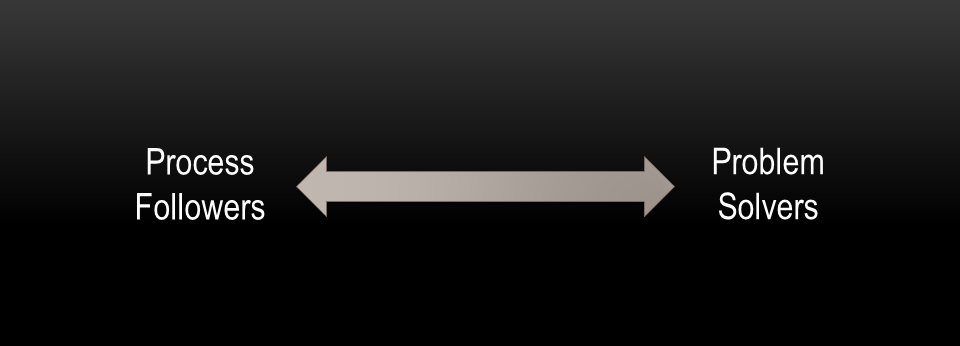

Closing the Architecture / Code Gap
Dan Haywood & Eoin Woods
About Us
Eoin Woods
Dan Haywood
note to Eoin:
|
Setting the scene
…
…
Assumptions/context
we’re building custom line-of-business applications
these applications have relatively complex domain logic
How to preserve the architectural integrity of the system?
how do you ensure that domain logic does not leach from one layer into an adjacent layer?
how do you ensure that its domain logic is easy to find, modify, test?
How to preserve the architectural integrity of the system?
we adopt a hexagonal architecture
(also known as ports-and-adapters)
How to preserve the architectural integrity of the system?
How to preserve the architectural integrity of the system?
we make the boundary of the hexagon can’t be breached
beyond the boundary is framework code; you couldn’t write business logic there even if you wanted to
presentation and persistence concerns are orthogonal to the domain
domain logic is easy to trace
the UI is a direct representation of that domain logic
How to ensure the application plays well in the larger enterprise?
how do you ensure that the boundaries of the bounded contexts are not eroded over time?
How to ensure the application plays well in the larger enterprise?
Every action invocation is captured as an
Interactiontarget object, the member identifier, the arguments
this
Interactionobject is a JAXB-annotated DTO, reified into XMLcan then be published onto an event bus
typically consumers will call back to the REST API
REST API with conneg support to access data
User invokes action

Action invocation published to bus

Subscriber calls back via REST API

Conneg used to return stable DTO

Interacts with other system

How does the framework support microservices?
the current architectural vogue for building systems is, of course, microservices.
can an Apache Isis app be a microservice?
How does the framework support microservices?
the framework automatically provides a REST API, built out of its metamodel
to simplify development we integrate with Swagger
swagger-ui
a maven plugin generates the swagger spec for your build pipeline
the automatic UI also gives your back-end staff the ability to administer the service
How does the framework support monoliths?
even though microservices are where the current hype is, most applications are (and probably should continue to be) monoliths
how do you keep your monolith applications modular; how do they not become big balls of mud?
How does the framework support monoliths?
The framework provides two very significant features:
mixins allow business functionality to be moved out of a domain object
domain events allow modules to veto or react to changes in other modules
the framework recombines the logic/validation within its metamodel, creating a coherent UI for the end-user
Mixins
Domain objects consist of actions, properties and collections
A mixin action removes this logic from the domain object and places it into a separate mixin object
An object’s properties and collections can similarly be factored out
The mixin is bound to the domain object by the (interface) types that the domain object implements
Domain events
A domain event is fired whenever the end-user interacts with a member of the domain object
hide, disable, validate, executing, executed
The subscriber can either veto the change, or react to it
somewhat akin to RDBMS referential integrity, but at the domain layer
Either guava or AxonFramework can be used as the event bus implementation
Why build rather than buy, anyway?
The "sweet spot" for an Apache Isis application is one with a rich domain, such as case management, or order fulfillment
Stepping back, does it even make sense to build such an app? Why not just buy some off-the-shelf packaged software?
Why build rather than buy, anyway?
We should distinguish between the business' core domain and any supporting sub-domains
You should build for your business' core domain
otherwise you’ll be held hostage to your software vendor’s view of how your company should operate
and, you won’t be able to evolve your business
But, you should buy for any supporting sub-domains
accounting, HR, document management
Transformation costs
Using packaged software means your business users will end up translating their own internalized domain model to/from that of the app
Excel for the back-office staff to transform inputs into the form expected of the app
Data warehouses to allow executives to make sense of the state of their business
Using packaged software

Using custom software

What sort of users can use an Apache Isis application?
…
…
What sort of users can use an Apache Isis application?
We think of the end-users of our apps along a scale:

Problem solvers
Problem solvers are domain experts, who use the application every day
Generally interact with entities directly
View models reserved for high-volume use cases
The app provides a toolbox for problem solvers, but doesn’t mandate a process
the process is maleable and in the user’s own head
Just use Apache Isis' default "Wicket" viewer
Process followers
Process followers are non-expert, just want to accomplish simple goal
Typically interact with view models
simplifications of the domain that encode a process
Typically use a custom app that hits the REST API
or, can customize the Wicket viewer to their use cases
How does the framework help build the right system?
…
…
How does the framework help build the right system?
By providing a tight feedback loop
no UI to develop
By demonstrating an actual running system
Creates empathy/association
Also, it builds the ubiquitous language
Contentious? or sensible?
Agile methods prefer developing from the outside-in
user journeys, captured via BDD etc.
We tend to develop from the inside-out
domain entities first with their domain invariants
then add view models to support specific use cases
then add layouts for user experience
We don’t try to infer the domain from a bunch of screens
Testability
Unit testing is trivial; Apache Isis apps are glued together using dependency injection
Integration testing is also done within JUnit
We use fixture scripts (our own mini-framework) to initialize the (in-memory) database
can also be used when prototyping
For the tests themselves, the
WrapperFactoryservice simulates the UINo selenium here, thank you very much!
Patterns and Idioms
The framework is also somewhat opinionated
Easy enough to learn
Accommodates different skill levels of (developers)
| TODO - not sure this point is strong enough to keep; lots of frameworks can say this, and there’s not much to demonstrate |
What about other "ilities" ?
security ?
auditability ?
i18n ?
note to Eoin:
|
Security
Pluggable
out-of-the-box Shiro integration
integrate with LDAP, oAuth similarly
security add-on
Auditability
i18n
.pofiles rather thanResourceBundles
What about lock-in ?
…
…
note to Eoin:
|
View Layer
Use the REST API
Naked Objects.NET have a new REST only API
for their BSc project, an intern developed a command line/speech API for blind users
Wavemaker
NoWicket
write a new one, eg Vaadin
Persistence Layer
The framework uses DataNucleus, which implements JDO and JPA
Most in the community persist to a relational database
DataNucleus provides an SPI for multiple stores, including NoSQL
Neo4J, Mongo, Cassandra
Coding style
there’s an ORM rehydrating the objects, so that constrains what is valid to some extent
the Isis metamodel is quite extensible; can add support for own annotations etc
a blend of orientations
OO for the mutable entities
Functional for value types (can plug in your own)
Aspect oriented for the cross-cutting concerns
Deployment Options
prototyping
production
on the Apache Isis platform
host within Spring/CDI say
In conclusion
…
…
Learning More
eoin.woods@endava.com and @eoinwoodz
dan@haywood-associates.co.uk and @dkhaywood
this slide deck at http://github.com/danhaywood/jaxlondon2016